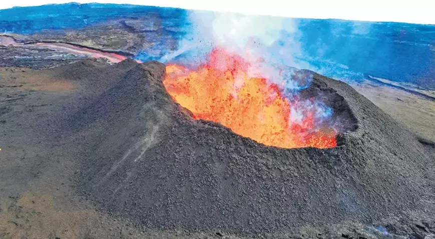

Kıssadan Hisseler
Anasayfa
Bilim
Spor
Teknoloji
Sağlık
Bakan Ersoy’dan güzel sanatlar mesajı: ‘Harika çocukları’ destekleyeceğiz
‘GRB 221009A’, radyo dalgalarını bile karıştırdı: Kozmik patlamayı bu kez ucuz atlattık

Depremlerle sarsılan İzlanda’da yanardağın patlaması bekleniyor: Yer sallanırken volkan kükrüyor!
Kuzey Kore yeni füze motorlarını test etti